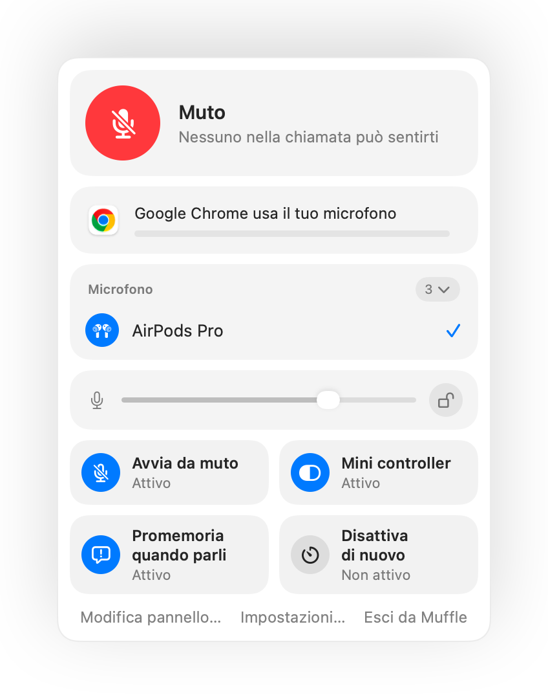

Come disattivare il microfono su Mac con una scorciatoia da tastiera
macOS ha un tasto per la dettatura, ma nessuno per disattivare il microfono. Ogni app per chiamate ha la propria scorciatoia, che funziona solo se l'app è in primo piano.
Muffle aggiunge un'unica scorciatoia che disattiva direttamente il microfono, in tutte le app contemporaneamente. La combinazione predefinita è Control-Opzione-M, ma puoi scegliere quella che preferisci.
Prova Muffle gratis per 3 giorniIn arrivo sul Mac App Store
Disattiva con una scorciatoia
- Installa Muffle.
- Premi Control-Opzione-M per disattivare. L'icona nella barra dei menu diventa rossa e compare la conferma “Muto”.
- Premila di nuovo per attivare il microfono.
- Per modificarla, apri le Impostazioni di Muffle, clicca sulla scorciatoia e premi la nuova combinazione.

- Tieni premuta la scorciatoia da muto per parlare, poi rilasciala per disattivare di nuovo il microfono.
- Fai clic con il tasto destro sull'icona di Muffle nella barra dei menu per disattivare all'istante con il mouse.
Domande frequenti
La scorciatoia funziona anche se l'app della chiamata non è in primo piano?
Sì. Funziona da qualsiasi app, anche a tutto schermo.
Posso usare un singolo tasto, come F5?
Sì. I tasti funzione funzionano da soli; gli altri tasti richiedono Control, Opzione o Comando.